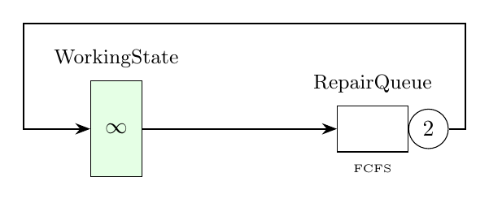

Tutorial 3: Machine Interference Problem
The machine interference problem (also known as the repairmen problem) is a classic closed queueing network. A set of machines alternate between working (in a delay node) and being repaired (in a queue with multiple servers). This example demonstrates closed queueing networks and CTMC analysis.

% Example 3: Machine interference problem
model = Network('MRP');
%% Block 1: nodes
delay = Delay(model,'WorkingState');
queue = Queue(model, 'RepairQueue', SchedStrategy.FCFS);
queue.setNumberOfServers(2);
%% Block 2: classes
cclass = ClosedClass(model, 'Machines', 3, delay);
delay.setService(cclass, Exp(0.5));
queue.setService(cclass, Exp(4.0));
%% Block 3: topology
model.link(Network.serialRouting(delay,queue));
%% Block 4: solution
solver = CTMC(model);
ctmcAvgTable = solver.avgTable()
StateSpace = solver.stateSpace()
InfGen = full(solver.generator())
CTMC.printInfGen(InfGen,StateSpace)// Example 3: Machine interference problem
val model = Network("MRP")
// Block 1: nodes
val delay = Delay(model, "WorkingState")
val queue = Queue(model, "RepairQueue", SchedStrategy.FCFS)
queue.setNumberOfServers(2)
// Block 2: classes
val cclass = ClosedClass(model, "Machines", 3, delay)
delay.setService(cclass, Exp(0.5))
queue.setService(cclass, Exp(4.0))
// Block 3: topology
model.link(Network.serialRouting(delay, queue))
// Block 4: solution
val solver = CTMC(model)
solver.avgTable.print()
solver.stateSpace.print()from line_solver import *
model = Network('MRP')
# Block 1: nodes
delay = Delay(model, 'WorkingState')
queue = Queue(model, 'RepairQueue', SchedStrategy.FCFS)
queue.set_number_of_servers(2)
# Block 2: classes
cclass = ClosedClass(model, 'Machines', 3, delay)
delay.set_service(cclass, Exp(0.5))
queue.set_service(cclass, Exp(4.0))
# Block 3: topology
model.link(Network.serial_routing(delay, queue))
# Block 4: solution
solver = CTMC(model)
ctmcAvgTable = solver.avg_table()
stateSpace, nodeStateSpace = solver.state_space()
infGen, eventFilt = solver.generator()
CTMC.print_inf_gen(infGen, stateSpace)Expected Output
ctmcAvgTable =
Station JobClass QLen Util RespT ResidT ArvR Tput
____________ ________ _______ _______ _______ _______ ______ ______
WorkingState Machines 2.6648 2.6648 2 2 1.3324 1.3324
RepairQueue Machines 0.33516 0.16655 0.25154 0.25154 1.3324 1.3324
StateSpace =
0 1 2
1 0 2
2 0 1
3 0 0
InfGen =
-8.0000 8.0000 0 0
0.5000 -8.5000 8.0000 0
0 1.0000 -5.0000 4.0000
0 0 1.5000 -1.5000
[0 1 2]->[1 0 2]: 8.000000
[1 0 2]->[0 1 2]: 0.500000
[1 0 2]->[2 0 1]: 8.000000
[2 0 1]->[1 0 2]: 1.000000
[2 0 1]->[3 0 0]: 4.000000
[3 0 0]->[2 0 1]: 1.500000